1. Testtermine
-
1. Dez. 2025
-
es wurden statt dem 2. Test schriftliche und mündliche Mitarbeitsüberprüfungen vereinbart
3. 2025-09-16
3.1. Authentifizierung und Autorisierung
-
Statuscodes sind nicht korrekt
-
401 Unauthorized sollte unauthenticated heissen
-
403 Forbidden sollte unauthorized heissen
-
3.1.1. Ablauf einer HTTP Anfrage
-
Zugriff auf eine geschützte Ressource durch Request.
-
Server antwortet mit 401 Unauthorized und fordert Authentifizierung an. Der Client wird an den Keycloak weitergeleitet.
-
Client authentifiziert sich beim Keycloak (z.B. durch Login).
-
Keycloak sendet ein Token (z.B. JWT) an den Client zurück.
-
Client sendet das Token in der nächsten Anfrage an den Server.
-
Server überprüft das Token und gewährt Zugriff auf die Ressource, wenn das Token gültig ist.
4. 2025-09-22
4.1. Projektideen Stütz
-
Franklyn: Lehreraccounts, KI-Detektion, ev. weitere Funktionen wie aufzeigen
-
Clemens, Jakob, Eldin, Gregor
-
-
LeoIoT Jonas, Daniel L, Paul, Elias, Stefan
-
Sensoren in Klassen mit Dashboard
-
Dashboard für PV-Anlage und Verbräuche der Schule
-
-
Trainingsplaner (Paul, Elias, Daniel L.)
-
HTL 3D für Elternsprechtag
-
MusicVoting
-
Miriam, Simone, Marlies
-
-
Der sprechende Eisbär (Chatbot mit KI)
-
Dashboard mit Grafana und InfluxDB für eine Mineralölfirma
-
Hanan
-
Almin
-
-
FPV-Drohnen Assistent (David, Simon)
5. 2025-09-23 Keycloak
IAM … Identity and Access Management
Keycloak ist ein Softwareprodukt zur Verwaltung von Identitäten und Zugriffsrechten in Anwendungen und Diensten. Es bietet Funktionen wie Single Sign-On (SSO), Benutzerverwaltung, Rollen- und Berechtigungsmanagement sowie Integration mit verschiedenen Authentifizierungsprotokollen wie OAuth2, OpenID Connect und SAML.
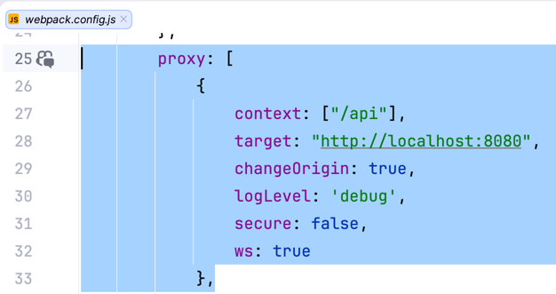
Die Payload eines tokens ist nicht verschlüsselt jedoch fälschungssicher signiert.
-
Was ist Keycloak
-
Keycloak ist eine Open-Source Identity- und Access-Management-Lösung (IAM), die Single Sign-On (SSO) für Anwendungen und Services bereitstellt. Es übernimmt zentrale Aufgaben im Bereich der Authentifizierung und Autorisierung, basierend auf modernen Sicherheitsstandards wie OAuth 2.0, OpenID Connect (OIDC) und SAML 2.0.
-
-
CORS (Cross-Origin-Ressource-Sharing)
-
CORS (Cross-Origin Resource Sharing) ist ein Sicherheitsmechanismus in Webbrowsern, der den Zugriff von Webanwendungen auf Ressourcen über Domänengrenzen hinweg regelt.
-
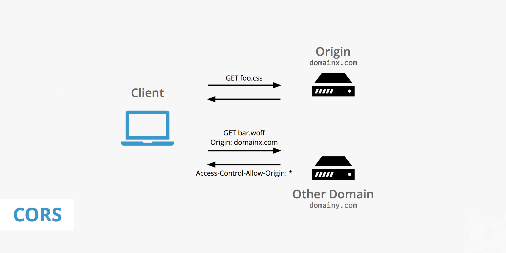
-
Was ist Kubernetes?
-
Kubernetes ist ein Container-Orchestrierungstool, welches dafür sorgt , dass Container automatisch gestartet, überwacht, skaliert und im Fehlerfall neu gestartet werden.
-
6. 2025-10-07
6.1. Pure Web
npm create vite
-
Wir verwenden Vite als Build-Tool (Bundler)
-
Erstellt ein großes javascript file mit allen Abhängigkeiten.
-
Unterstützt auch React, Vue, Svelte, …
-
Einfacher zu konfigurieren als Webpack
-
Vergleichbar mit
webpack
-
package-lock.json zu .gitignore hinzufügen
-
Model erstellen
6.1.2. Warum Typescript Module?
-
Auf einer herkömmlichen Website wird alles javascript direkt im globalen Scope ausgeführt. Eigener Code im globalen Scope kann leicht mit fremdem Code kollidieren (z.B. Bibliotheken) und ist daher unwartbar.
-
Deshalb werden Typescript Module verwendet. Diese haben ihren eigenen Scope und kollidieren nicht mit anderem Code.
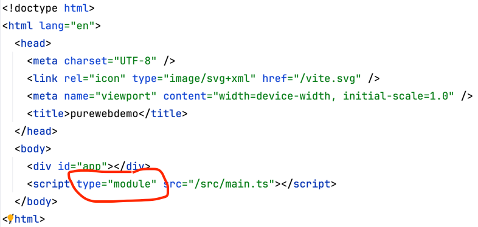
9. 2025-11-10
9.1. Backlog mit User Stories
Jede Gruppe muss ein Backlog erstellen, in dem alle User Stories für das Projekt gesammelt werden. Dabei ist zu beachten, dass die User Stories klein genug sind, um in einem Sprint umgesetzt werden zu können. Auch sind nur wenige User Stories detailliert auszuarbeiten, die meisten sollten nur grob beschrieben werden, da diese erst späte im Projekt detailliert werden.
9.2. Systemarchitektur
Abgeleitet vom Backlog ist ein erster entwurf der Systemarchitektur zu erstellen. Dabei sind die wichtigsten Komponenten des Systems zu identifizieren und deren Zusammenspiel zu beschreiben. Auch sind die wichtigsten Technologien und Frameworks zu benennen, die im Projekt verwendet werden sollen.
10. 2025-12-02 [Hanan Mehic]
10.1. Kubernetes
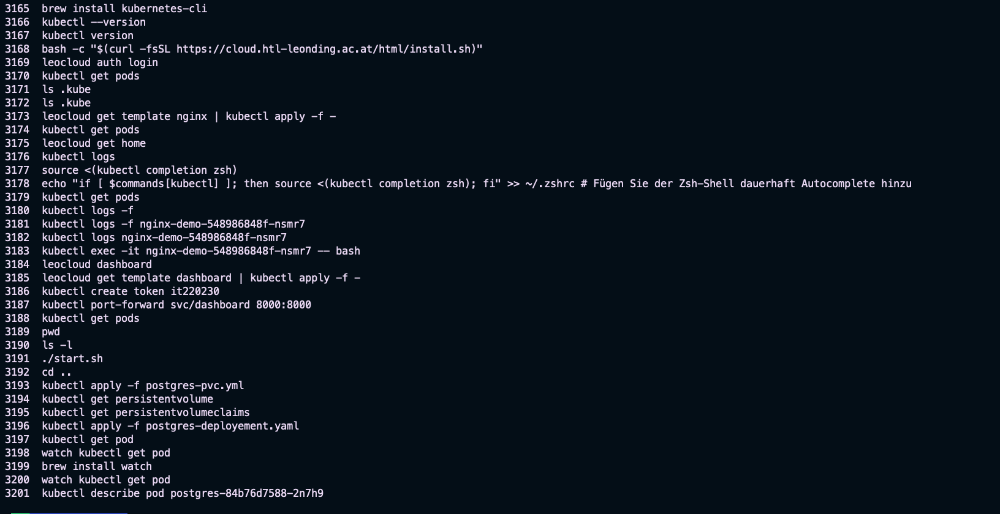
apiVersion: apps/v1
kind: Deployment
metadata:
name: postgres
spec:
replicas: 1
selector:
matchLabels:
app: postgres
template:
metadata:
labels:
app: postgres
spec:
containers:
- name: postgres
image: postgres:16-alpine
ports:
- containerPort: 5432
env:
- name: POSTGRES_PASSWORD
value: "demo"
- name: POSTGRES_USER
value: "demo"
- name: POSTGRES_DB
value: "demo"
volumeMounts:
- name: postgres-storage
mountPath: /var/lib/postgresql/data
volumes:
- name: postgres-storage
persistentVolumeClaim:
claimName: postgres-pvc10.2. Port Forwarding
-
Port Forwarding ist eine Netzwerktechnik, die es ermöglicht, eingehende Datenpakete, die an einer bestimmten Adresse und einem externen Port ankommen, zu einem bestimmten Gerät und einem internen Port im privaten Netzwerk umzuleiten. Sie ist notwendig, da Geräte in deinem privaten Netzwerk standardmäßig durch eine Firewall verborgen sind.
11. 2025-12-22
11.1. Teststrategien
-
Vorgehen zum Auswählen von Testfällen
-
Äquivalenzklassen
-
Grenzwertanalyse
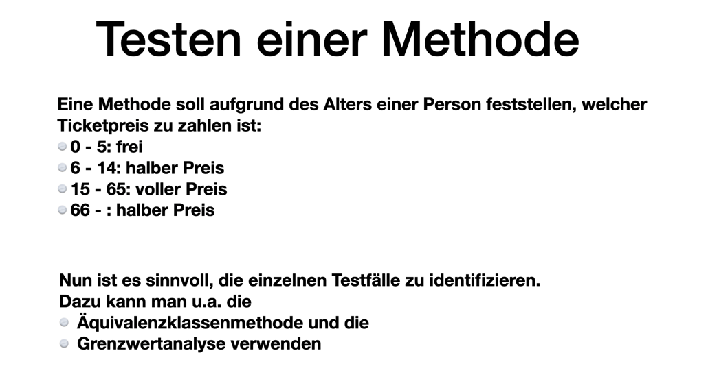
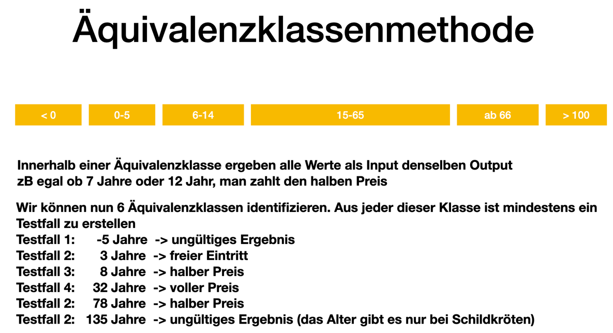
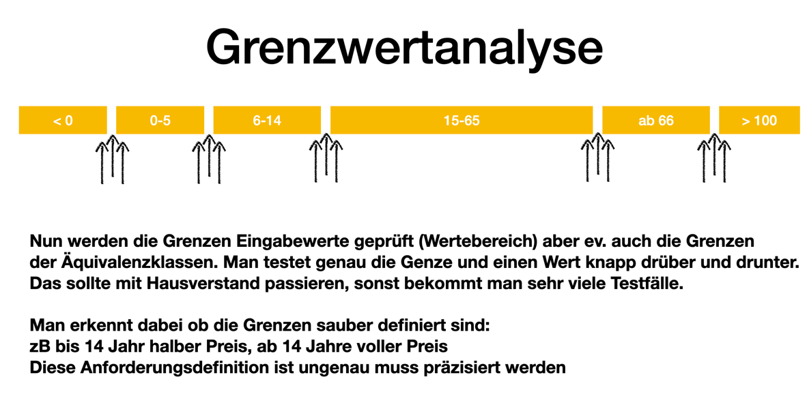
Testobjekte: * Black-Box-Tests * White-Box-Tests * Gray-Box-Tests
11.1.1. Testaufbau
-
Arrange - Act- Assert (AAA-Pattern)
-
Given - When - Then (GWT-Pattern)
-
Mock
-
Mocking bedeutet täuschen oder vortäuschen
-
Ein Mock-Objekt ist ein Objekt, das das Verhalten eines echten Objekts simuliert.
-
Mocks werden verwendet, um Abhängigkeiten zu isolieren und kontrollierte Testumgebungen zu schaffen.
-
Bibliotheken: Mockito, JMock, EasyMock
-
Mock Objekte können auch Stubs oder Spies sein.
-
Ein Stub ist ein einfaches Mock-Objekt, das vordefinierte Antworten auf Methodenaufrufe zurückgibt.
-
Ein Spy ist ein Mock-Objekt, das das Verhalten eines echten Objekts überwacht und aufzeichnet.
-
-
-
Philipp Hauer’s Blog - Modern Best Practices for Testing in Java
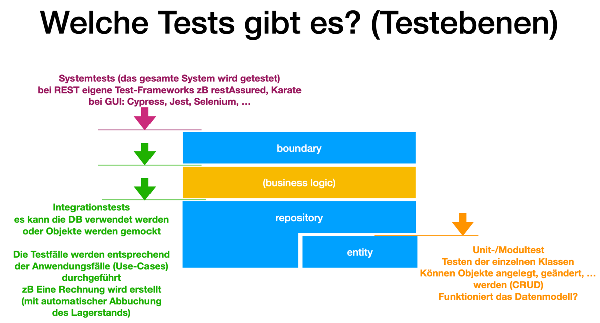
13. 2026-01-20 [A. Mahmutovic]
13.1. API Testing mit httpyac
Um API-Endpunkte automatisiert und reproduzierbar zu testen, verwenden wir das Tool httpyac.
13.1.1. Installation und Setup
Die Installation erfolgt lokal im Projektverzeichnis (Ordner api), um globale Abhängigkeiten zu vermeiden.
# Initialisierung des API-Ordners
cd api
npm init -y
# Lokale Installation von httpyac
npm install httpyac13.1.2. Erstellen von Requests
Requests werden in einer .http Datei definiert. Mit ?? werden Test-Assertions direkt unter dem Request eingefügt.
# @name clients
GET http://localhost:8080/clients
?? status == 20013.2. Code Coverage mit JaCoCo
JaCoCo (Java Code Coverage) misst, wie viel Prozent des Codes durch Tests tatsächlich ausgeführt werden.
13.2.1. Konfiguration Quarkus
Die Integration erfolgt über die pom.xml und die application.properties.
<dependency>
<groupId>io.quarkus</groupId>
<artifactId>quarkus-jacoco</artifactId>
<scope>test</scope>
</dependency>In den application.properties muss das Paket-Format umgestellt werden, um auch Integration-Tests korrekt zu erfassen:
quarkus.package.type=uber-jar13.3. Test-Strategie (Prof. Aberger)
-
Code Coverage Ziel: Ein Abdeckungsgrad von ca. 80% wird angestrebt.
-
Sinn des Testens: Die Abdeckung ist der Hauptgrund für das Testing, um die Stabilität bei Refactorings zu gewährleisten.
-
Code Design: Verwendung von Expressions (z.B. Switch-Expression mit
return) statt Statements erhöht die Testbarkeit und Übersichtlichkeit.-
Unnötige Getter und Setter sollten vermieden werden (Datenklassen/Records), da diese die Coverage-Statistik verfälschen (Boilerplate-Code ohne Logik).
-
// Effizientes Design: Expression statt Statement
public String resolve(int code) {
return switch (code) {
case 200 -> "OK";
default -> "Error";
};
}13.4. Kubernetes
apiVersion: apps/v1
kind: Deployment
metadata:
name: postgres
spec:
replicas: 1
selector:
matchLabels:
app: postgres
template:
metadata:
labels:
app: postgres
spec:
containers:
- name: postgres
image: postgres:16-alpine
ports:
- containerPort: 5432
env:
- name: POSTGRES_PASSWORD
value: "demo"
- name: POSTGRES_USER
value: "demo"
- name: POSTGRES_DB
value: "demo"
volumeMounts:
- name: postgres-storage
mountPath: /var/lib/postgresql/data
volumes:
- name: postgres-storage
persistentVolumeClaim:
claimName: postgres-pvc13.5. Port Forwarding
-
Port Forwarding ist eine Netzwerktechnik, die es ermöglicht, eingehende Datenpakete, die an einer bestimmten Adresse und einem externen Port ankommen, zu einem bestimmten Gerät und einem internen Port im privaten Netzwerk umzuleiten. Sie ist notwendig, da Geräte in deinem privaten Netzwerk standardmäßig durch eine Firewall verborgen sind.
15. 2026-03-01 [Hanan Mehic] - What ist kubernetes (Nana)
15.1. Official Definition of Kubernetes
-
Open source container orchestration tool
-
Developed by Google
-
Manages containers (Docker or other technologies)
-
Helps manage containerized applications in different deployment environments:
-
Physical
-
Virtual
-
Cloud
-
15.2. What Problems Does Kubernetes Solve?
-
Trend from Monolith to Microservices
-
Increased usage of containers
-
Demand for a proper way of managing hundreds of containers
15.3. What Features Do Orchestration Tools Offer?
-
High availability (no downtime)
-
Scalability and high performance
-
Disaster recovery (backup and restore)
15.4. Kubernetes Basic Architecture
A Kubernetes cluster consists of one Master Node connected to multiple Worker Nodes.
Each node has kubelet running on it.
Kubelet:
-
Kubernetes process
-
Enables the cluster to communicate with each node
-
Executes tasks like running application processes
Each Worker Node:
-
Runs Docker containers of different applications
-
Hosts the running application workloads
15.4.1. Master Node Components
Important Kubernetes processes run on the Master Node:
-
API Server
-
Container
-
Entry point to the Kubernetes cluster
-
All communication goes through it
-
-
Controller Manager
-
Keeps track of what is happening in the cluster
-
-
Scheduler
-
Decides on which Worker Node a Pod should run
-
Based on available resources
-
-
etcd
-
Kubernetes backing store (key-value database)
-
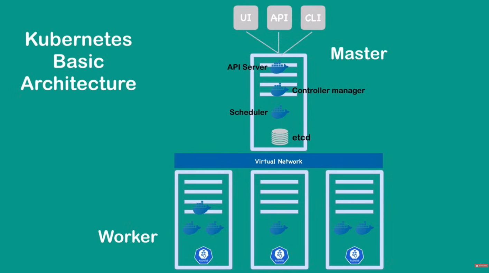
15.5. Kubernetes Basic Concepts
15.5.1. Pod
-
Wrapper of a container
-
Multiple Pods can run on each Worker Node
-
A Pod can contain multiple containers
-
Usually one Pod per application
-
Each Pod is its own self-contained server
-
Manages containers running inside it
-
Communicates with other Pods via internal IP addresses
16. 2026-03-09 [Clemens Zangenfeind]
16.1. Kriterien für ein gutes GUI
-
Ein gutes GUI soll feedback an den Nutzer zurückgeben.
-
Bsp.: Ein Nutzer erstellt einen neuen Listeneintrag, ein pop-up sagt dem Nutzer, dass ein neuer Eintrag erstellt wurde.
-
-
Es soll Beschreibungen und Alle möglichen Interaktionen klar darstellen.
-
Der Nutzer sieht direkt bei Aufruf der Website, wie er alle möglichen Filter auf Daten anwenden kann.
-
-
Der Nutzer soll wissen wo er anfangen soll.
-
Die wichtigsten Daten werden als erstes / am größten gezeigt (Informationshirarchie).
-
Der Titel eines Kalendareintrags ist größer geschrieben und als erstes platziert, weitere Daten folgen danach
-
→ Das Design eines GUIs hängt von der Zielgruppe ab
| UI ist das design (Aussehen), UX ist die Nutzererfahrung (Interaktionen) |
18. 2026-03-09 - User Interface [Simone Sperrer]
18.1. Kriterien für eine gute GUI
-
Dashboard: Informationen auch ohne ausgeführter Aktion
-
Es ist ersichtlich, welche Aktionen möglich sind
-
Dem User alle Daten sichtbar machen, die ihn interessieren könnten
-
Startseite: Ein gesamter Überblick
-
Bei ausgeführten Aktionen: Feedback über Erfolg oder Fehler (User-Feedback)
-
Symbole Verwenden (z.B. Zahlungsoptionen)
-
Pflichtfelder markieren
-
Wichtige Informationen hervorheben (Farben, Schriftgröße, …)
-
Mann sollte nicht mehr wie zwei Schriftarten verwenden
-
Cookies mit einem Klick akzeptieren oder ablehnen können
-
Make your links look like links
-
Konsistente Gestaltung
18.2. User Interface Elemente
-
Buttons
-
Checkboxen
-
Man kann mehrere Optionen auswählen
-
-
Radio Buttons
-
Man kann nur eine Option auswählen
-
-
Comboboxen
-
Eine Combobox ist ein Eingabefeld, in dem man tippen, suchen und oft aus einer Liste auswählen kann (ein- oder mehrfach).
-
-
Dropdown
-
Ein Dropdown ist eine Liste, die sich öffnet und nur die Auswahl eines vordefinierten, einzelnen Wertes erlaubt.
-
-
Toggle Switch
-
Man sieht sehr gut welche Optionen ausgewählt sind
-
-
Slider
-
Man bekommt mit einem Blick ein gutes User-Feedback über den noch verfügbaren Spielraum
-
-
Date Picker
-
Popups
-
Menu Bars
-
Wizard
-
unterteilt komplexe Prozesse in mehrere Schritte, um die Benutzer zu zeigen in welchem Schritt sie sich befindet
-
18.3. Was versteht man unter Informationshierarchie?
Informationshierarchie ist die strukturierte Anordnung und Priorisierung von Inhalten, um Nutzern das Verständnis und das schnelle Auffinden von Informationen zu erleichtern.
18.4. UI Vs. UX
-
UI (User Interface) bezieht sich auf die Gestaltung der Benutzeroberfläche, also wie die Elemente angeordnet sind, welche Farben verwendet werden, welche Schriftarten, …
-
UX (User Experience) bezieht sich auf die Gesamterfahrung des Nutzers, einschließlich der Benutzerfreundlichkeit, der Effizienz und der Zufriedenheit.
18.5. Serif Vs. Sans-serif
-
Serif-Schriften (mit Füßchen) sind ideal für gedruckte, lange Texte (Bücher, Zeitungen), da sie die Zeilenführung unterstützen und klassisch/seriös wirken.
-
Sans-Serif-Schriften (ohne Serifen) eignen sich besser für Bildschirme, kurze Texte, Überschriften und moderne, minimalistische Designs (Websites, Apps, Logos).
18.6. Deployment
-
Wohin kann man Applikationen deployen?
-
Cloud-Provider: AWS, Azure, Google Cloud, … → k8s
-
Docker:
-
vm
-
bare-metal
-
-
-
Grundregeln bei Docker-Containern/Images:
-
Container sollten so klein wie möglich sein (Single Responsibility Principle)
-
Nach Möglichkeit sollen keine eigenen Images mit Dockerfile erstellt werden, sondern offizielle Images konfiguriert werden (z.B. postgres, redis, …)
-
-
Grundregeln für Keycloak:
-
Immer einen eigenen Realm erstellen und nicht den Master Realm verwenden.
-
19. 2026-03-16
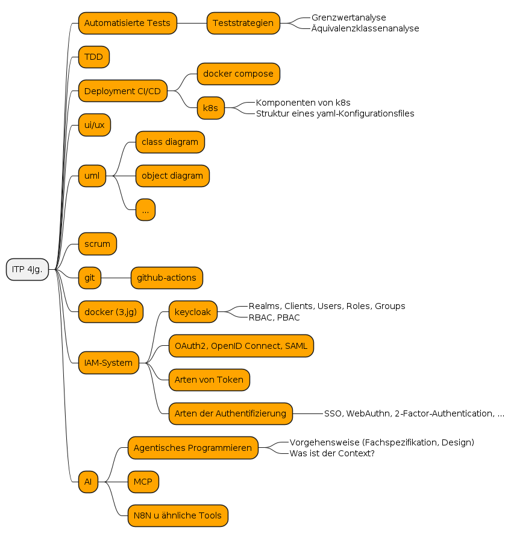
3.LF Stoffumfang:
-
UML (CLD, OD, Deployment Diagramm, …)
-
IAM-Systeme
-
Deployment (Docker, Kubernetes, CI/CD, gh-action)
-
Agentisches Programmieren
20. 2026-03-17
Für jedes Teammitglied sind Zeitaufzeichnungen den Projekten zu führen:
-
zB in https://clockify.me/
21. 2026-03-24
-
Prof. Aberger demonstriert agentisches Programmieren mit Claude und Gemini
-
Es wird eine Checklist erstellt, die durch das LLM abgearbeitet wird.
-
Es wird angemerkt, dass Grundlagen des Programmierens tw. fehlen:
-
zB Java: Virtuelle Threads
-
zB JS: Shadow DOM, Custom Elements, …
-
-
22. 2026-04-13 [Hanan Mehic]
22.1. Grundprinzip von LLMs
Large Language Models (LLMs) arbeiten auf Basis von Tokenisierung und Vektorraummodellen.
-
Texte werden in Tokens zerlegt (Wörter / Wortteile)
-
Tokens werden in Vektoren umgewandelt
-
Bedeutung entsteht durch Ähnlichkeit im Vektorraum
22.2. Mathematische Intuition
22.2.1. Ähnlichkeit von Bedeutungen (Cosinus)
-
cos(θ) ~ 1 → gleiche Richtung → gleiche Bedeutung
-
cos(θ) ~ 0 → unabhängig
-
cos(θ) ~ -1 → gegensätzlich
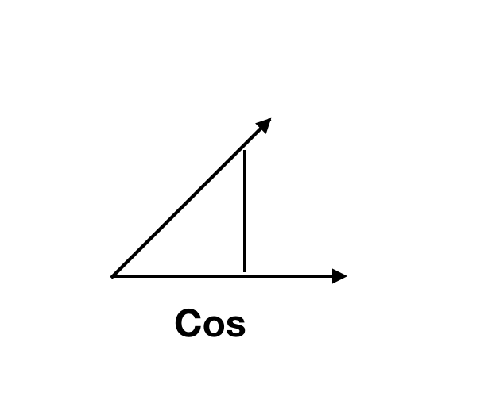
Ziel beim Prompting: Prompt-Vektor ~ Ziel-Vektor